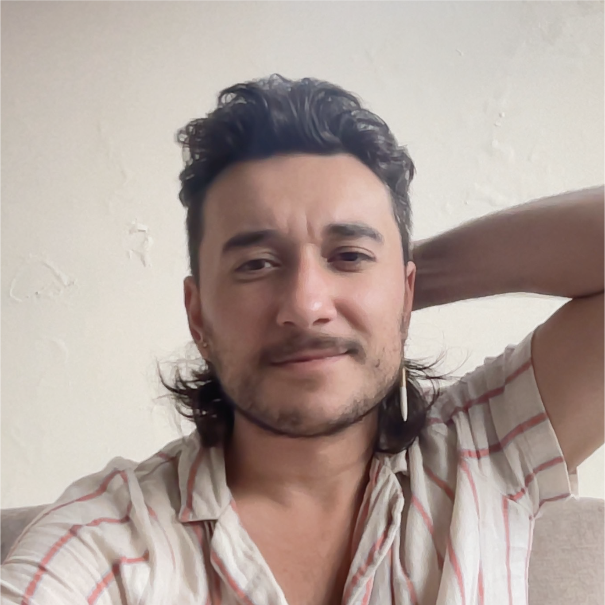

Howdy! I'm a computational methodologist, cultural sociologist, and complexity scholar. Most of my research uses large, scraped, and crowdsourced data to examine culture and cultural change. What most excites me about culture is how much of human experience it touches. My work variously intersects with political communication, media studies, digital humanities, social movements, public policy, and organizational behavior.
Over the past two years my research has focused on orienting AI systems in social theory across ethical alignment, social science methodology, and the future of work/science.
I have a PhD in Sociology and Complex Systems (Informatics) from Indiana University. My undergraduate studies at Reed College were in Evolutionary and Molecular Biology.
I am a post-doctoral fellow in the Baden-Württemberg Special Program for International Academic Freedom [DE EN] based at the Institute for Social Science at the University of Stuttgart.
I'm on the job market for 2027! If you know of openings that fit my profile, please do reach out.